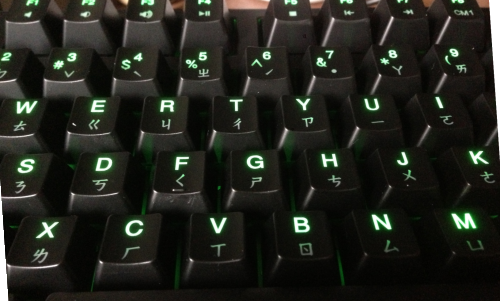
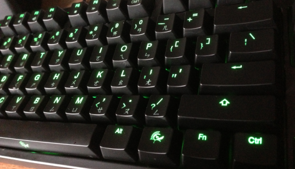
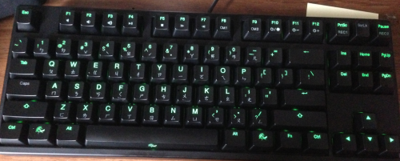
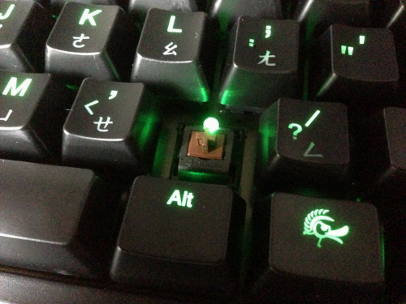

Initiation into mechanical keyboard geekdom
• http://joshua.poehls.me/2013/initiation-into-mechanical-keyboard-geekdom/
A laptop style short keyed keyboard has been my instrument of choice for years now. They are easy to type on and fast. I gave up the stock Dell keyboards years ago for a bare bones Logitech.
A few months ago I started digging into mechanical keyboards. They had caught my attention and suddenly I really wanted one. I was ready for a new keyboard, as you can see my Logitech is positively filthy. Why clean it when you can buy a new one, right?
After a lot of research into the various mechanical switches and watching many YouTube videos, I finally decided. I ordered my first mechanical keyboard from, fittingly enough, MechanicalKeyboards.com.
My new Ducky DK9087 Shine 2 arrived and it was love at first press. I’m still training my fingers to the slightly different layout but this thing is amazing.
Buying this keyboard has been like buying new shoes. You stand straighter, walk taller, type faster, feel better.


A quick breakdown is in order:
- Those funky etches you see on the keys? That’s Chinese, or rather zhuyin which is a phonetic system for transcribing Chinese. I opted for the Chinese version of the keyboard which is identical to the US version except that it adds these additional characters to the keys.
- I got the green LEDs but they make the board with blue, white, yellow, and red as well. It was a tough decision!
- The LEDs have 5 brightness levels ranging from humane to blinding. You can even program which keys are lit up and save them as presets.
- All of the standard media keys are there. Play, pause, stop, volume, mute, and skip.
- The finish is a very subtle matte. No glossy fingerprint attractor here!

I opted for the Cherry MX Brown switches which are a good middle ground between the Blue (more clicky) and Red (linear). They feel perfect. I also got the Tenkeyless version of the board because I never use the 10-key and wanted a super short keyboard that wouldn’t push my mouse out of the way.

What is the typing like? Oh, so sweet. Each press resonates and builds a rhythm in your fingers. It is like switching from organ keys to real piano keys. You feel the depth and play with new feeling. If typing is your art then you absolutely must try this quality instrument!
I went out on a limb and bought this thing without ever having tried it in person. I totally scored. If you have never considered a mechanical keyboard before then I seriously recommend you check it out. Take the plunge, go get one!
Edit
I just ran across these photos of the MechanicalKeyboards.com display room. They were taken when a GeekHack Meetup toured the facility. So cool!